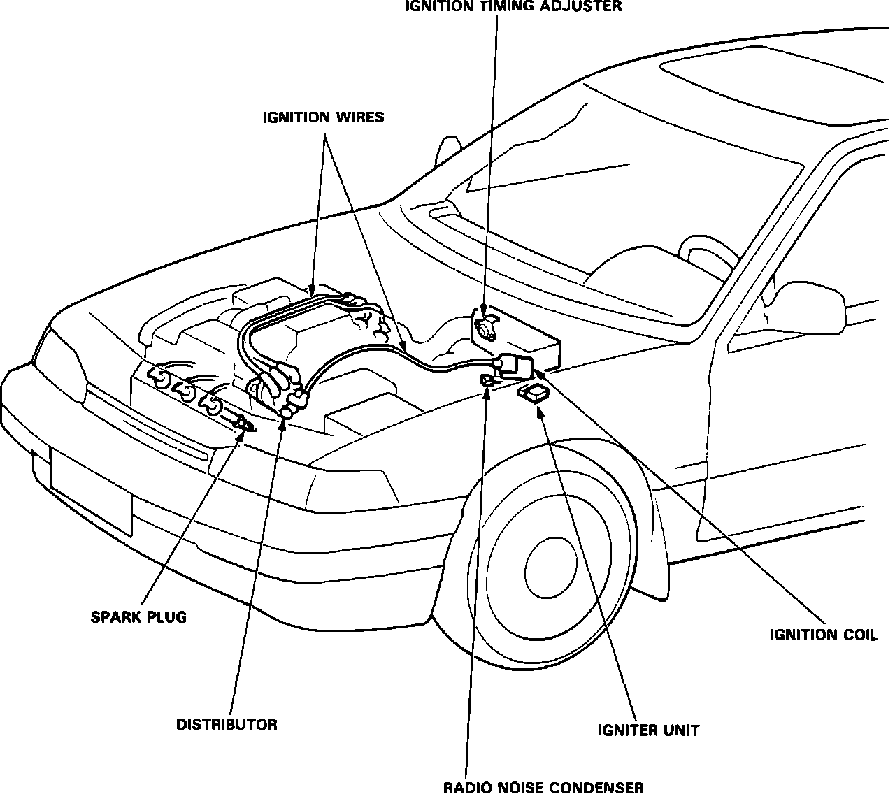

Crankshaft Position Sensor: Locations
Component Location:

CYL/CRANK SENSOR
Located on the left cylinder head, behind the timing belt sprocket.
DISTRIBUTOR ASSEMBLY
Located on the left side of engine.
ELECTRONIC CONTROL UNIT (ECU)
Coupe - Located under carpeting, in passenger footwell.
Sedan - Located under passenger seat.
IGNITER
Located on the left fender, behind the fuse/relay block.
IGNITION COIL
Located on the left fender panel.
IGNITION TIMING ADJUSTER
Located in the emission control box.
RADIO NOISE CONDENSER
Located on the left fender, below the ignition coil.
TDC SENSOR
Located in the distributor assembly.